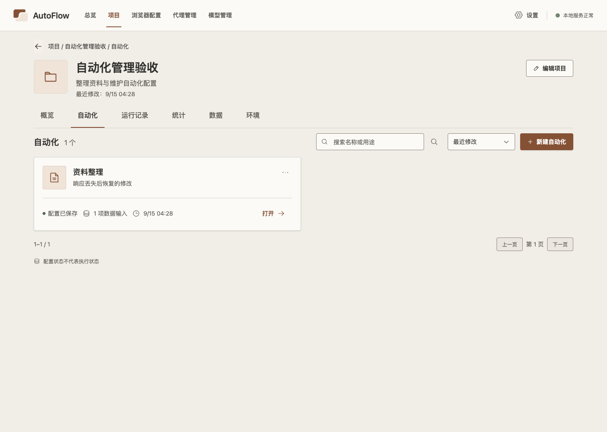
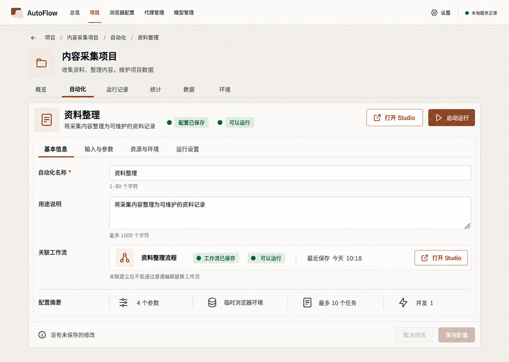
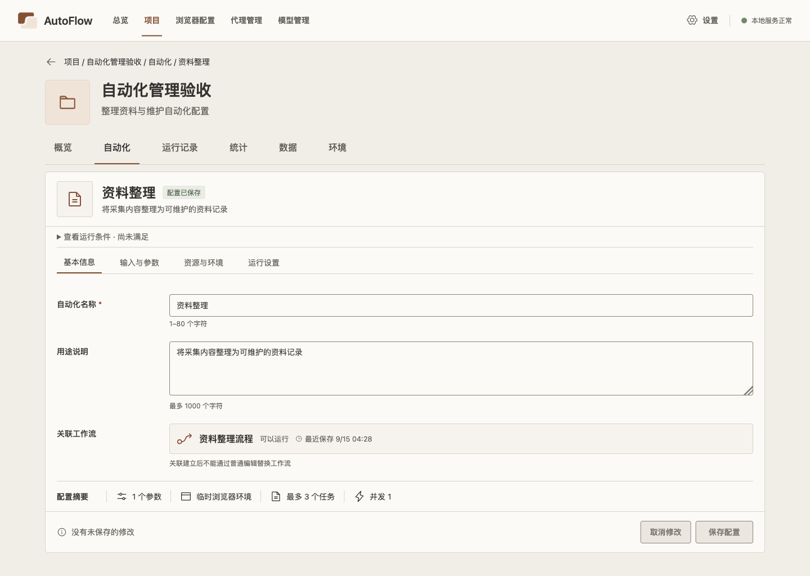
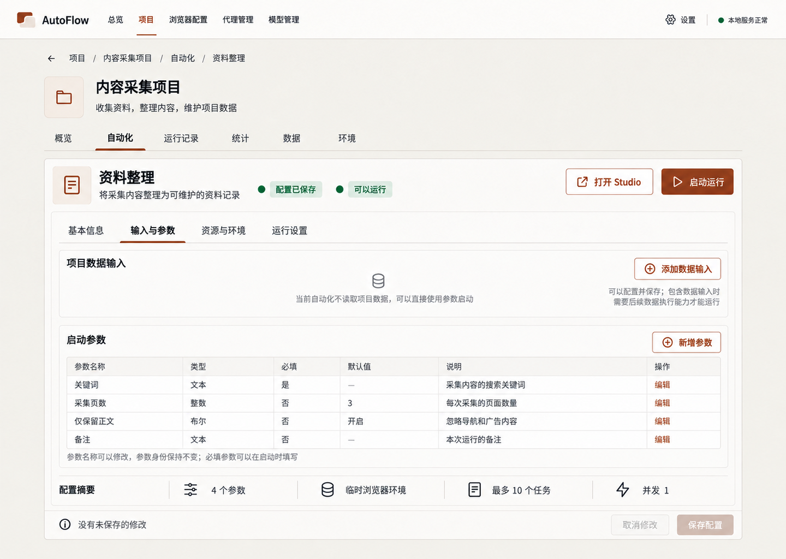
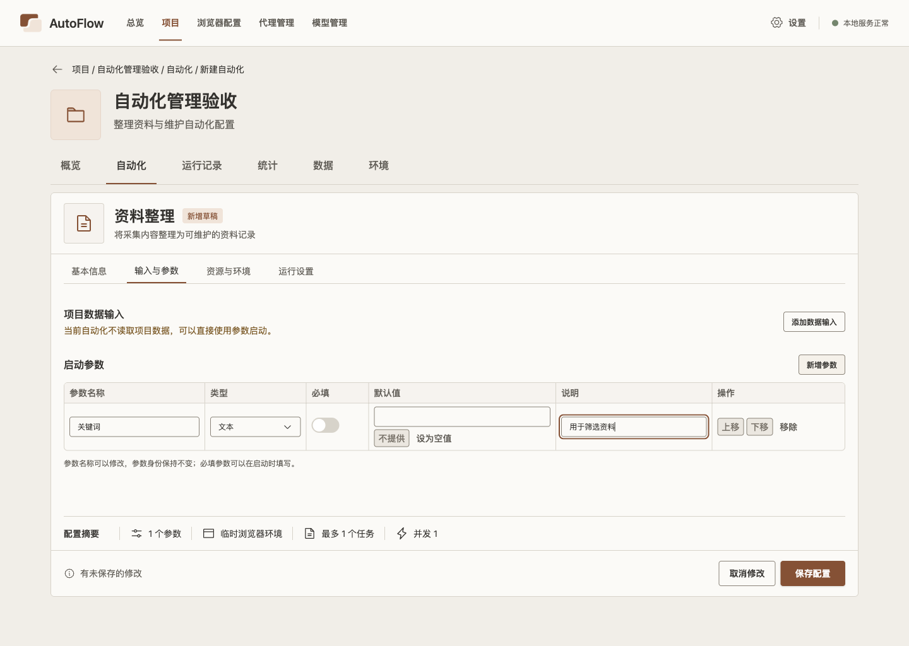
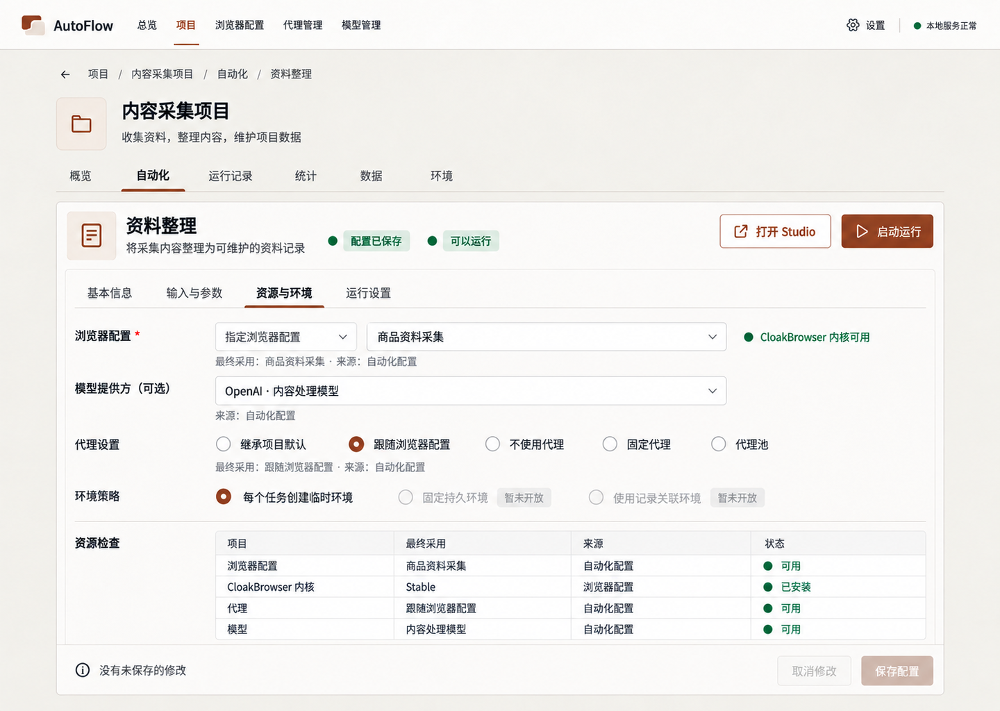
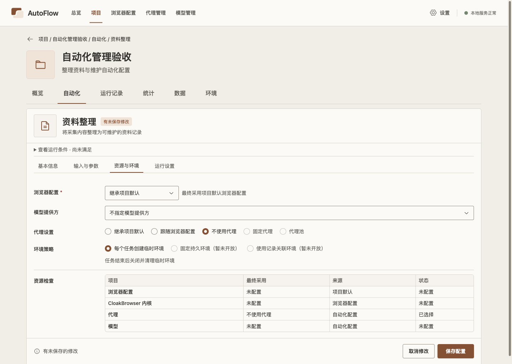
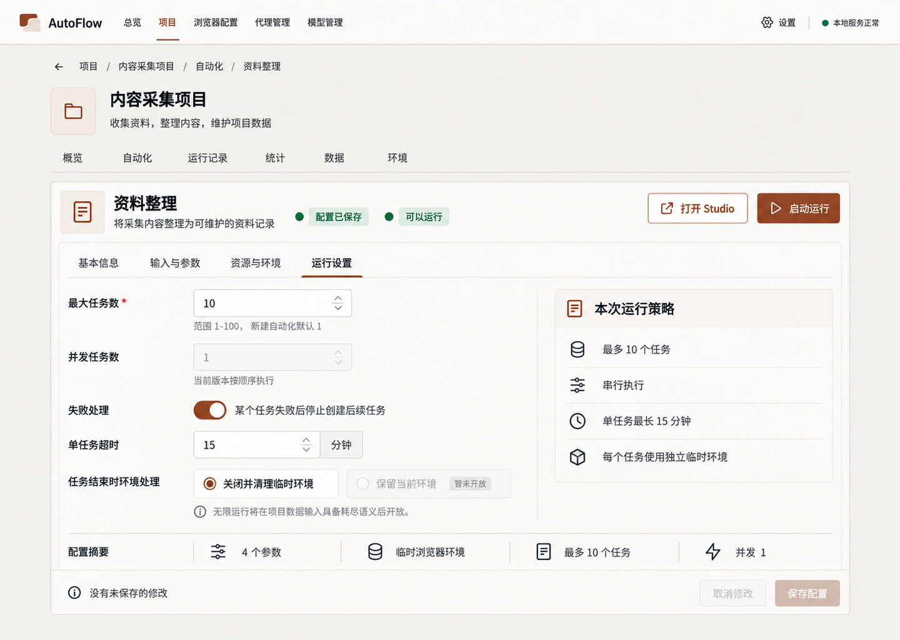
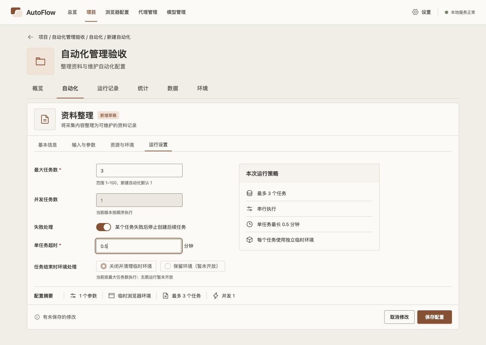

自动化目录 · 90/100
主体结构、数量、搜索排序、卡片和分页一致；卡片字与图标更小，有轻微阴影。


人工逐图审查；候选应用截图，尚非用户确认基线。顶部导航保留，不联合 Studio demo 测试。
项目上下文、四页签、字段、摘要和保存栏一致；运行条件独占一行，字段略下移。


数据输入与六列参数表完整；编辑行较原图空态更高，内容密度尚可继续优化。


修正前82分；删除重复标题并对齐资源表后四行事实首屏完整，保存栏无遮挡。


五组策略、实时摘要、保存栏一致；右侧摘要较原图偏左且更紧凑。


主体结构、数量、搜索排序、卡片和分页一致；卡片字与图标更小，有轻微阴影。
